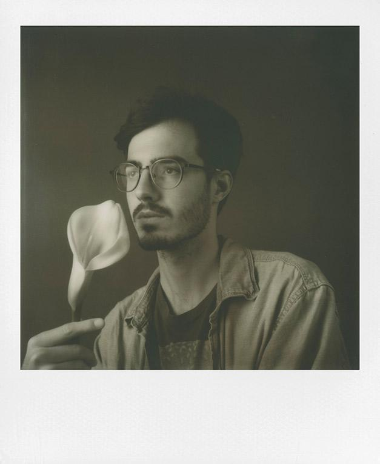
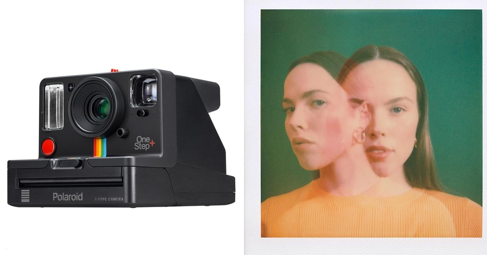
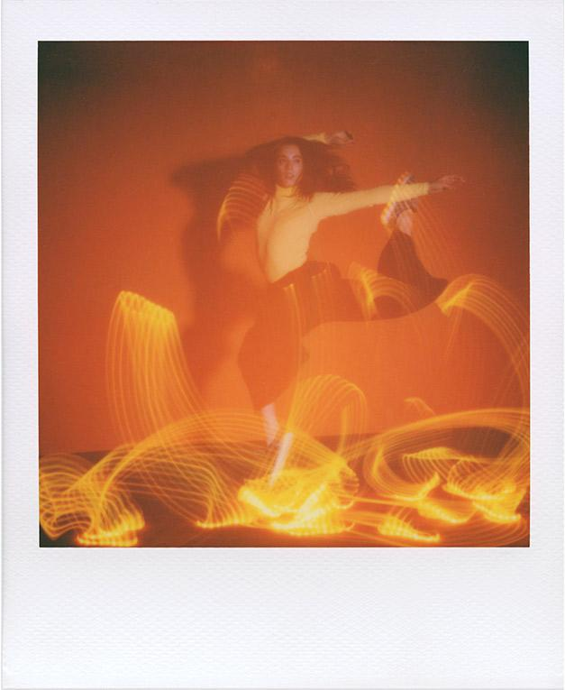
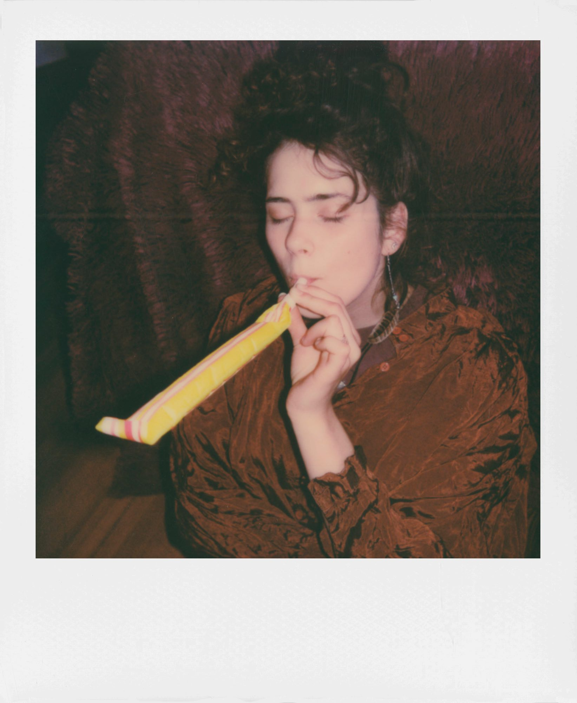

Polaroid OneStep + - это камера типа BOX TYPE с встроенной отключаемой вспышкой и двумя встроенными линзами (портретной и стандартной). У фотоаппарата есть гнездо для штатива, нашейный ремешок и возможность управления экспозицией. Но самой главной отличительной чертой является возможность соединения Polaroid One Step + со смартфоном через Bluetooth и установка 7 специальных режимов съемки, о которых я расскажу ниже.
Специальные настройки, используемые в фотоаппарате Polaroid OneStep + :
Портретная съемка.
Установите этот режим и делайте снимки, в которых объект будет четким, а изображение вокруг немного размытым.

Телефон, как кнопка спуска.
Групповые фото стали еще проще. Установите Polaroid One Step + на штатив или поставьте камеру на устойчивую поверхность, встаньте с друзьями на необходимое расстояние, и в своём телефоне нажмите кнопку. Снимок готов!
Двойная экспозиция.
Одна из самых важных функций этого полароида. Выберите её в приложении и делайте мистические и волшебные снимки с наложением кадров друг на друга.

Светорисунок.
Используйте источник света как кисть для рисования.
Установите длиную выдержку и создайте фотографию с неоновым рисунком прямо как на зеркальном фотоаппарате.

Селф таймер.
12-ти секундный таймер для автопортретов и прочих изобретательств.
Мануальный режим.
Полный личный контроль над сьемкой. Настройте диафрагму, выдержку, уровень вспышки и выезд снимка.
Шумовой триггер.
Установите режим спуска по уровню шума. Будь-то лаянье собаки или плескание в бассейне.
